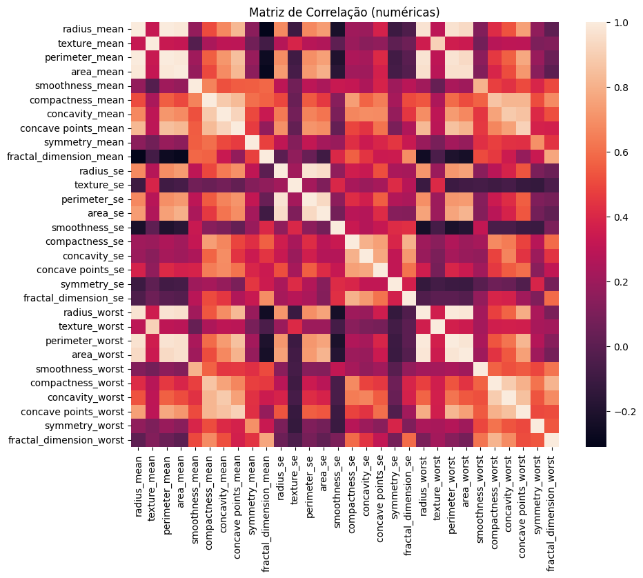

🎨 Deep Learning - Classificação de Câncer de Mama
👥 Equipe do Projeto
👨🎓 Mateus Teixeira Ramos da Silva
👨🎓 Fabio Ferreira Figueiredo
📚 Disciplina: Redes Neurais com TensorFlow
🎯 Tipologia do Problema
🧠 APRENDIZADO
SUPERVISIONADO
Dados rotulados disponíveis
🎯 TIPO DE PROBLEMA
CLASSIFICAÇÃO
Predição de categorias
Classes
Binário
Amostras
Rotuladas
Features
Numéricas
🎆 OBJETIVO FINAL
BENIGNO vs MALIGNO
Distinguir entre tumores benignos e malignos com alta precisão
Objetivo Principal
Classificação Binária Supervisionada
Domínio Médico
Diagnóstico de Câncer de Mama
Tecnologia
Redes Neurais Profundas
🎯 Apresentação do Problema
📊 Contexto e Relevância Médica
O câncer de mama é uma das principais causas de morte por câncer em mulheres mundialmente. A detecção precoce é fundamental para aumentar as chances de cura e reduzir a mortalidade.
🚨 Desafios Atuais do Diagnóstico Manual:
- Subjetivo: Dependente da experiência do patologista
- Demorado: Análise manual consome tempo valioso
- Custoso: Requer especialistas altamente qualificados
- Variável: Inconsistências entre diferentes profissionais
🔍 Tipo de Problema
CLASSIFICAÇÃO BINÁRIA SUPERVISIONADA
Objetivo: Distinguir entre tumores Benignos (B) e Malignos (M)
✅ Por que Classificação Supervisionada?
- Classificação: Variável target categórica com duas classes distintas
- Supervisionada: Possuímos dados rotulados (ground truth)
- Binária: Apenas duas classes: Benigno vs Maligno
📊 Base de Dados
🏥 Origem e Credibilidade
Fonte: Kaggle - Breast Cancer Dataset
Origem Original: Wisconsin Diagnostic Breast Cancer (WDBC) Database
Criado por: Dr. William H. Wolberg, University of Wisconsin
Benchmark: Amplamente utilizado na literatura científica
Pacientes
Amostras Totais
Colunas
Atributos Totais
Features
Características Numéricas
Missing
Dados Faltantes
🎯 Distribuição das Classes:
✅ Justificativa do Tamanho:
- Adequado para redes neurais simples
- Suficiente para validação cruzada robusta
- Permite divisão treino/validação/teste sem overfitting
- Comparável a outros estudos na área médica
🔍 Features: Complexidade e Desafios
📐 Estrutura dos Dados: 30 Features Numéricas
Cada feature é calculada em 3 estatísticas:
- Mean (média): Valor médio da característica
- SE (standard error): Erro padrão da característica
- Worst (pior valor): Maior valor (mais extremo) da característica
Fórmula: 10 Características Morfológicas × 3 Estatísticas = 30 Features
🧬 Heatmap de Correlação das Features
🧬 10 Características Morfológicas Base:
⚠️ Dificuldades e Desafios do Tema:
- Escalas Diferentes: area (100s-1000s) vs smoothness (0.05-0.16) - Normalização obrigatória
- Interpretação Médica: Características morfológicas complexas exigem conhecimento especializado
- Correlações: Features relacionadas (radius ↔ perimeter ↔ area) podem confundir o modelo
- Overfitting: 30 features para 569 amostras requer regularização cuidadosa
- Desbalanceamento: 62.7% benigno vs 37.3% maligno
- Criticidade Médica: Falsos negativos (perder maligno) são mais graves que falsos positivos
🏗️ Arquitetura da Rede Neural
🧠 Rede Neural Feedforward Densa
Camada de Entrada: 30 neurônios (features)
↓
Camada Oculta 1: 64 neurônios + ReLU + Dropout(0.3)
↓
Camada Oculta 2: 32 neurônios + ReLU + Dropout(0.3)
↓
Camada de Saída: 1 neurônio + Sigmoid
Camadas Ocultas
Balanceio capacidade/simplicidadeNeurônios
Redução gradualDropout
RegularizaçãoAtivação
Não saturação• Dados tabulares sem dependência sequencial
• Estrutura simples e interpretável
• Adequada para classificação binária
• 1 camada: Insuficiente para padrões complexos
• 2 camadas: Balanceio capacidade/simplicidade
• 3+ camadas: Risco de overfitting
• Não saturação (evita vanishing gradient)
• Computacionalmente eficiente
• Estado da arte em deep learning
• Classificação binária: output 0-1
• Interpretável como probabilidade
• Compatible com binary_crossentropy
📈 Análise Exploratória
🎯 Distribuição da Variável Target (Y)
Casos Benignos (B)
62.7%Casos Malignos (M)
37.3%📊 Análise do Desbalanceamento
- Desbalanceamento moderado: Razão aproximada 1.7:1
- Não crítico: Não requer técnicas especiais de balanceamento
- Representativo: Ambas as classes têm amostras suficientes
- Realista: Reflete a distribuição real na população
🏆 Features Mais e Menos Relevantes
🥇 MAIS RELEVANTES (Baseado em Correlação e Importância Clínica):
Tumores malignos tendem a ter contornos mais irregulares
Tumores maiores frequentemente são malignos
Malignidade associada a bordas côncavas
🥉 MENOS RELEVANTES:
Medida complexa, menos interpretável clinicamente
Erro padrão da simetria pouco discriminativo
🔬 Estratégia Escolhida: Usar TODAS as 30 features
Justificativas: Redes neurais são robustas, regularização previne overfitting, informação complementar, benchmark com literatura.
🔬 Por que Classificação Supervisionada?
Classes Distintas
Benigno (B) vs Maligno (M)Amostras Rotuladas
Diagnósticos Confirmados✅ Por que Classificação?
- Variável target categórica com duas classes distintas
- Objetivo: predizer categoria do tumor baseado em características morfológicas
✅ Por que Supervisionada?
- Possuímos dados rotulados (ground truth)
- Modelo aprende padrões a partir de exemplos conhecidos
- Podemos avaliar performance comparando predições com diagnósticos reais
❌ Alternativas Rejeitadas:
- Regressão: Não queremos predizer valores contínuos
- Clustering: Temos labels conhecidos
- Multiclasse: Apenas duas classes disponíveis
📚 Benchmarks e Referências
🔬 Literatura Científica:
Street, W.N., Wolberg, W.H. and Mangasarian, O.L. (1993)
"Nuclear feature extraction for breast tumor diagnosis"
Resultado: 97.5% de acurácia com linear programming
CNNs
Acurácia LiteraturaMLPs
Acurácia LiteraturaNossa Meta
Expectativa🏁 Modelos de Comparação no Projeto:
Pior caso possível - sempre prevê a classe mais comum
Modelo linear tradicional para comparação
RN com hiperparâmetros padrão
RN com hiperparâmetros otimizados
🎯 Estratégia de Validação
🔄 Validação Cruzada Estratificada (5-fold)
- Mantém proporção das classes em cada fold
- Reduz variância das estimativas
- Uso eficiente dos dados limitados
⚙️ Implicações do Desbalanceamento para o Modelo:
- Usar métricas balanceadas (F1-score, AUC-ROC)
- Considerar precision e recall para ambas as classes
- Stratified sampling na divisão treino/teste
- Foco no Recall para casos malignos (mais crítico clinicamente)
🔧 Grid Search para Hiperparâmetros:
📊 Métricas de Avaliação:
- Acurácia: Métrica principal
- Precision: Importante para reduzir falsos positivos
- Recall: Crítico para não perder casos malignos
- F1-Score: Balanceio entre precision e recall
- AUC-ROC: Avaliação independente do threshold
🎯 Resultados Esperados
Acurácia Esperada
Recall Malignos
Crítico clinicamentePrecision
Reduzir falsos alarmes🎯 Contribuições do Projeto:
- Comparação sistemática de abordagens (Dummy → Logistic → NN → Otimizado)
- Implementação reproduzível com documentação completa
- Interface Streamlit para demonstração interativa
- Metodologia rigorosa de validação e avaliação
⚠️ Limitações Reconhecidas:
- Dataset pequeno: 569 amostras podem limitar generalização
- Uni-institucional: Dados de uma única instituição
- Validação externa: Falta testes em outros hospitais
- Features limitadas: Ausência de dados clínicos adicionais
🚀 Próximos Passos:
- Teste em datasets maiores e multicentralizados
- Incorporar dados clínicos (idade, histórico familiar)
- Implementar explicabilidade (SHAP, LIME)
- Deploy em ambiente de produção hospitalar
📈 Resultados Detalhados
Acurácia Final
Performance Geral do Modelo
Recall (Malignos)
Crítico clinicamente
Precision
Reduzir falsos alarmes
🔲 Matriz de Confusão

📈 Convergência do Modelo